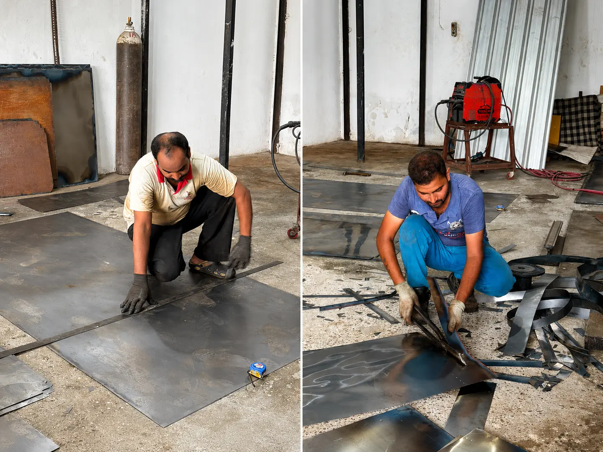

PreparationStep01
Raw Sheet Metal
The process begins with sheet metal selected for the furniture body, panels and internal components.
Material selection
Sheet thickness and quality are chosen around the intended load, durability and final furniture application.